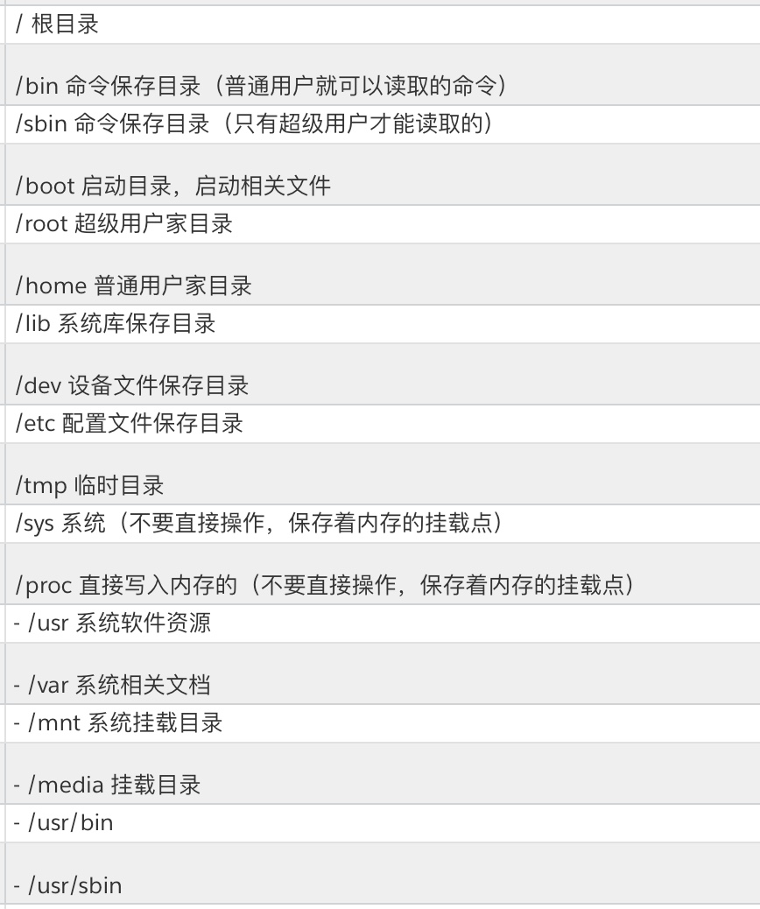

1. 系统目录, 挂载.

mkdir /mnt/cdroom 建立：挂载点
mount /dev/cdroom /mnt/cdroom 挂载：光盘到挂载点
2. 系统重要文件, 文本编辑.
2.1 重要文件:/etc/zshrc, ~/.bash_profile, ~/.zshrc 等等
~/.bash_profile 打开Terminal时执行.
~/.zshrc 切换子Shell时执行, 例如输入zsh, bash, 这个文件用的最多 To make aliases Permanent
/etc/zshrc 所有用户的配置. To make aliases Global
When bash is invoked as an interactive login shell, or as a non-interactive shell with
the --login option,
it first reads and executes commands from the file /etc/profile, if that file exists.
After reading that file, it looks for ~/.bash_profile, ~/.bash_login, and ~/.profile, in that order, and reads and executes commands from the first one that exists and is readable.
The --noprofile option may be used when the shell is started to inhibit this behavior.

2.2 文本编辑工具有: vim vi emacs nano等等
编辑最高权限文件: sudo vim /etc/zshrc
- vim打开文本:
vim ~/.bashrc或者vim ~/.zshrcbash/zsh资源 内涵环境变量 - vim编辑文本: 按下
i开始编辑. 按下esc退出编辑 - vim保存文本: 底行输入
:wq保存并退出 - 保存好资源: source ~/.bashrc
打开文件:open Podfile或者sublime open Podfile???
3 环境变量
3.1 主要变量介绍
What are Environment Variables?
- Dynamic values
- Exist in every operating system
- Can be created, edited, saved and deleted
- Gives information about the system behavior
- Change the way software/programs behaver
最主要的环境变量有:
env 显示所有环境变量
PATH 包括一系列目录, 目录里有系统所要执行的文件. This variable contains a list of directories in which your system looks for executable files.
USER 用户名
HOME 默认家目录
EDITOR 一个指向程序的路径. path to the program which edits the content of files
UID 用户唯一ID
TERM 默认终端
SHELL 在使用中的Shell
$LANG 表示全局语言设置
3.2 变量修改
修改
修改(每次命令前面的提示符): PS1="custom~ "
修改(普通变量): NEWVAR=123abc
打印变量对应值: echo $NEWVAR 结果是:123abc
取消变量: unset NEWVAR
设置某个环境变量的值: export NEWVAR
编辑添加一个新的环境路径/Users/BC: export PATH=$PATH:/Users/BC
查看
打印当前环境路径: echo $PATH, echo $HOME, echo $USER
打印字符串: echo -e "abcdefg"
四. 关于命令Command
4.1 命令本身
查看所有历史命令: history
常用参数: -c 清楚所有命令
-w 把缓存中的历史命令写入 `~/.bash_history`
查看命令内部的详细情况: man orderName 或者 info orderName 最好是orderName --help
4.2 别名
查看命令真实位置: which orderName
查看命令的别名位置: whereis orderName
查看现有的别名: alias
声明新别名: alias aliName="sudo comandName and optionsName"
删除别名: unalias aliName
4.3 链接
做链接(从真实指令到当前目录python): ln -s ~/anaconda/bin/py2 python
做链接(从正式指令到subl): ln -s ~/.sublime/sublime /bin/subl